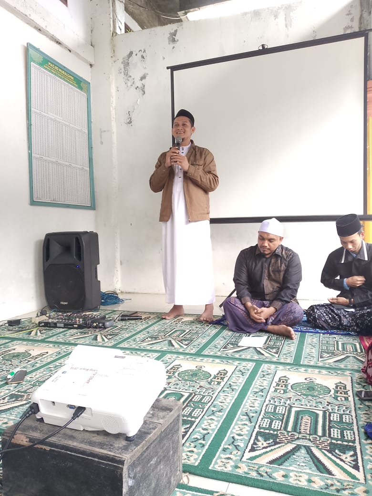
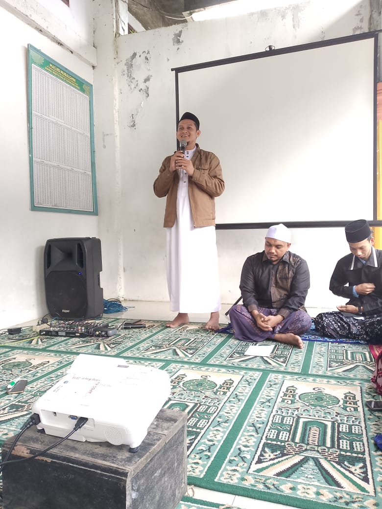

Profil Yayasan
Dayah Tahfidzul Qur'an Al Arabiyah membuka kesempatan bagi generasi muda untuk bergabung menjadi bagian dari keluarga besar kami. Dengan kurikulum terpadu yang mengintegrasikan nilai-nilai Qurani, ilmu agama, penguasaan bahasa asing, dan keterampilan hidup di era modern, kami siap mencetak generasi yang unggul dan berprestasi.
Visi
Menjadi pusat pendidikan Islam terpadu yang melahirkan generasi Qurani berkarakter Islami, Berakhlak Mulia, sosial Kepemimpinan melalui ilmu dan amal, Berazaskan Manhaj Ahlussunnah Waljama'ah.
Misi
- Menyediakan pendidikan berkualitas berbasis Al-Qur'an dan sunnah.
- Meningkatkan penguasaan bahasa asing untuk komunikasi global.
- Mengembangkan keterampilan hidup modern dengan nilai-nilai Islami.
- Membina akhlak mulia dan kepemimpinan berbasis keimanan.
 
